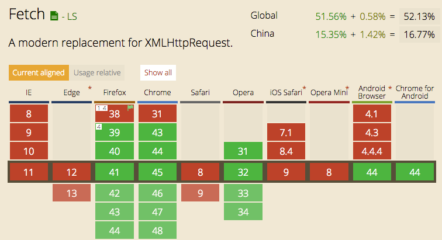

摘要： 玩转fetch。
Fundebug经授权转载，版权归原作者所有。
首先声明一下，本文不是要讲解fetch的具体用法，不清楚的可以参考MDN fetch教程。
说道fetch就不得不提XMLHttpRequest了，XHR在发送web请求时需要开发者配置相关请求信息和成功后的回调，尽管开发者只关心请求成功后的业务处理，但是也要配置其他繁琐内容，导致配置和调用比较混乱，也不符合关注分离的原则；fetch的出现正是为了解决XHR存在的这些问题。例如下面代码：
fetch(url)
.then(function(response) {
return response.json();
})
.then(function(data) {
console.log(data);
})
.catch(function(e) {
console.log("Oops, error");
});上面这段代码让开发者只关注请求成功后的业务逻辑处理，其他的不用关心，相当简单；也比较符合现代Promise形式，比较友好。
fetch是基于Promise设计的，从上面代码也能看得出来，这就要求fetch要配合Promise一起使用。正是这种设计，fetch所带来的优点正如传统 Ajax 已死，Fetch 永生总结的一样：
isomorphic-fetch可以方便同构不过话说回来，fetch虽然有很多优点，但是使用fetch来进行项目开发时，也是有一些常见问题的，下面就来说说fetch使用的常见问题。
fetch是相对较新的技术，当然就会存在浏览器兼容性的问题，借用上面应用文章的一幅图加以说明fetch在各种浏览器的原生支持情况：

从上图可以看出，在各个浏览器低版本的情况下都是不被支持的。
那么问题来了，如何在所有浏览器中通用fetch呢，当然就要考虑fetch的polyfill了。
上面说过，fetch是基于Promise来实现的，所以在低版本浏览器中Promise可能也未被原生支持，所以还需要Promise的polyfill；大多数情况下，实现fetch的polyfill需要涉及到的：
这样是否就可以安全的使用fetch来进行前后端通信了？上面说了在大多数情况下是这样，但是IE8/9则比较特殊：IE8它使用的是ES3，而IE9则对ES5部分支持。这种情况下还需要ES5的polyfill es5-shim支持了。
上述有关promise的polyfill实现，需要说明的是：
babel-runtime是不能作为Promise的polyfill的实现的，否则在IE8/9下使用fetch会报
Promise未定义。为什么？我想大家猜到了，因为babel-runtime实现的polyfill是局部实现而不是全局实现，fetch底层实现用到Promise就是从全局中去取的，拿不到这报上述错误。
另外，顺便补充一下fetch的polyfill实现思路是：
首先判断浏览器是否原生支持fetch，否则结合Promise使用XMLHttpRequest的方式来实现；这正是
whatwg-fetch的实现思路，而同构应用中使用的isomorphic-fetch，其客户端fetch的实现是直接require whatwg-fetch来实现的。
fetch发送请求默认是不发送cookie的，不管是同域还是跨域；那么问题就来了，对于那些需要权限验证的请求就可能无法正常获取数据，这时可以配置其credentials项，其有3个值：
omit: 默认值，忽略cookie的发送same-origin: 表示cookie只能同域发送，不能跨域发送include: cookie既可以同域发送，也可以跨域发送credentials所表达的含义，其实与XHR2中的withCredentials属性类似，表示请求是否携带cookie；具体可以参考阮一峰老师的跨域资源共享 CORS 详解中withCredentials一节的介绍；
这样，若要fetch请求携带cookie信息，只需设置一下credentials选项即可，例如fetch(url, {credentials: 'include'});
另外补充一点：
fetch默认对服务端通过
Set-Cookie头设置的cookie也会忽略，若想选择接受来自服务端的cookie信息，也必须要配置credentials选项；
这主要是由fetch返回promise导致的，因为fetch返回的promise在某些错误的http状态下如400、500等不会reject，相反它会被resolve；只有网络错误会导致请求不能完成时，fetch 才会被 reject；所以一般会对fetch请求做一层封装，例如下面代码所示：
function checkStatus(response) {
if (response.status >= 200 && response.status < 300) {
return response;
}
const error = new Error(response.statusText);
error.response = response;
throw error;
}
function parseJSON(response) {
return response.json();
}
export default function request(url, options) {
let opt = options || {};
return fetch(url, { credentials: "include", ...opt })
.then(checkStatus)
.then(parseJSON)
.then(data => data)
.catch(err => err);
}用过fetch的都知道，fetch不像大多数ajax库那样对请求设置超时timeout，它没有有关请求超时的feature，这一点比较蛋疼。所以在fetch标准添加超时feature之前，都需要polyfill该特性。
实际上，我们真正需要的是abort()， timeout可以通过timeout+abort方式来实现，起到真正超时丢弃当前的请求。
而在目前的fetch指导规范中，fetch并不是一个具体实例，而只是一个方法；其返回的promise实例根据Promise指导规范标准是不能abort的，也不能手动改变promise实例的状态，只能由内部来根据请求结果来改变promise的状态。
既然不能手动控制fetch方法执行后返回的promise实例状态，那么是不是可以创建一个可以手动控制状态的新Promise实例呢。所以：
实现fetch的timeout功能，其思想就是新创建一个可以手动控制promise状态的实例，根据不同情况来对新promise实例进行resolve或者reject，从而达到实现timeout的功能；
根据github上timeout handling上的讨论，目前可以有两种不同的解决方法：
var oldFetchfn = fetch; //拦截原始的fetch方法
window.fetch = function(input, opts) {
//定义新的fetch方法，封装原有的fetch方法
return new Promise(function(resolve, reject) {
var timeoutId = setTimeout(function() {
reject(new Error("fetch timeout"));
}, opts.timeout);
oldFetchfn(input, opts).then(
res => {
clearTimeout(timeoutId);
resolve(res);
},
err => {
clearTimeout(timeoutId);
reject(err);
}
);
});
};当然在上面基础上可以模拟类似XHR的abort功能：
var oldFetchfn = fetch;
window.fetch = function(input, opts) {
return new Promise(function(resolve, reject) {
var abort_promise = function() {
reject(new Error("fetch abort"));
};
var p = oldFetchfn(input, opts).then(resolve, reject);
p.abort = abort_promise;
return p;
});
};Promise.race方法接受一个promise实例数组参数，表示多个promise实例中任何一个最先改变状态，那么race方法返回的promise实例状态就跟着改变，具体可以参考这里。
var oldFetchfn = fetch; //拦截原始的fetch方法
window.fetch = function(input, opts){//定义新的fetch方法，封装原有的fetch方法
var fetchPromise = oldFetchfn(input, opts);
var timeoutPromise = new Promise(function(resolve, reject){
setTimeout(()=>{
reject(new Error("fetch timeout"))
}, opts.timeout)
});
retrun Promise.race([fetchPromise, timeoutPromise])
}最后，对fetch的timeout的上述实现方式补充几点：
timeout不是请求连接超时的含义，它表示请求的response时间，包括请求的连接、服务器处理及服务器响应回来的时间；
fetch的timeout即使超时发生了，本次请求也不会被abort丢弃掉，它在后台仍然会发送到服务器端，只是本次请求的响应内容被丢弃而已；
fetch是与服务器端进行异步交互的，而JSONP是外链一个javascript资源，并不是真正ajax，所以fetch与JSONP没有什么直接关联，当然至少目前是不支持JSONP的。
这里我们把JSONP与fetch关联在一起有点差强人意，fetch只是一个ajax库，我们不可能使fetch支持JSONP；只是我们要实现一个JSONP，只不过这个JSONP的实现要与fetch的实现类似，即基于Promise来实现一个JSONP；而其外在表现给人感觉是fetch支持JSONP一样；
目前比较成熟的开源JSONP实现fetch-jsonp给我们提供了解决方案，想了解可以自行前往。不过再次想唠叨一下其JSONP的实现步骤，因为在本人面试的前端候选人中大部分人对JSONP的实现语焉不详；
使用它非常简单，首先需要用npm安装fetch-jsonp
npm install fetch-jsonp --save-dev然后在像下面一样使用：
fetchJsonp("/users.jsonp", {
timeout: 3000,
jsonpCallback: "custom_callback"
})
.then(function(response) {
return response.json();
})
.catch(function(ex) {
console.log("parsing failed", ex);
});XHR是原生支持progress事件的，例如下面代码这样：
var xhr = new XMLHttpRequest();
xhr.open("POST", "/uploads");
xhr.onload = function() {};
xhr.onerror = function() {};
function updateProgress(event) {
if (event.lengthComputable) {
var percent = Math.round((event.loaded / event.total) * 100);
console.log(percent);
}
xhr.upload.onprogress = updateProgress; //上传的progress事件
xhr.onprogress = updateProgress; //下载的progress事件
}
xhr.send();但是fetch是不支持有关progress事件的；不过可喜的是，根据fetch的指导规范标准，其内部设计实现了Request和Response类；其中Response封装一些方法和属性，通过Response实例可以访问这些方法和属性，例如response.json()、response.body等等；
值得关注的地方是，response.body是一个可读字节流对象，其实现了一个getRender()方法，其具体作用是：
getRender()方法用于读取响应的原始字节流，该字节流是可以循环读取的，直至body内容传输完成；
因此，利用到这点可以模拟出fetch的progress，具体可以参考这篇文章2016 - the year of web streams。
代码实现如下，在线demo请参考fetch progress demo。
// fetch() returns a promise that resolves once headers have been received
fetch(url).then(response => {
// response.body is a readable stream.
// Calling getReader() gives us exclusive access to the stream's content
var reader = response.body.getReader();
var bytesReceived = 0;
// read() returns a promise that resolves when a value has been received
reader.read().then(function processResult(result) {
// Result objects contain two properties:
// done - true if the stream has already given you all its data.
// value - some data. Always undefined when done is true.
if (result.done) {
console.log("Fetch complete");
return;
}
// result.value for fetch streams is a Uint8Array
bytesReceived += result.value.length;
console.log("Received", bytesReceived, "bytes of data so far");
// Read some more, and call this function again
return reader.read().then(processResult);
});
});另外，github上也有使用Promise+XHR结合的方式实现类fetch的progress效果(当然这跟fetch完全不搭边）可以参考这里，具体代码如下：
function fetchProgress(url, opts={}, onProgress){
return new Promise(funciton(resolve, reject){
var xhr = new XMLHttpRequest();
xhr.open(opts.method || 'get', url);
for(var key in opts.headers || {}){
xhr.setRequestHeader(key, opts.headers[key]);
}
xhr.onload = e => resolve(e.target.responseText)
xhr.onerror = reject;
if (xhr.upload && onProgress){
xhr.upload.onprogress = onProgress; //上传
}
if ('onprogerss' in xhr && onProgress){
xhr.onprogress = onProgress; //下载
}
xhr.send(opts.body)
})
}
fetchProgress('/upload').then(console.log)既然是ajax库，就不可避免与跨域扯上关系；XHR2是支持跨域请求的，只不过要满足浏览器端支持CORS，服务器通过Access-Control-Allow-Origin来允许指定的源进行跨域，仅此一种方式。
与XHR2一样，fetch也是支持跨域请求的，只不过其跨域请求做法与XHR2一样，需要客户端与服务端支持；另外，fetch还支持一种跨域，不需要服务器支持的形式，具体可以通过其mode的配置项来说明。
fetch的mode配置项有3个值，如下：
same-origin：该模式是不允许跨域的，它需要遵守同源策略，否则浏览器会返回一个error告知不能跨域；其对应的response type为basic。cors: 该模式支持跨域请求，顾名思义它是以CORS的形式跨域；当然该模式也可以同域请求不需要后端额外的CORS支持；其对应的response type为cors。no-cors: 该模式用于跨域请求但是服务器不带CORS响应头，也就是服务端不支持CORS；这也是fetch的特殊跨域请求方式；其对应的response type为opaque。针对跨域请求，cors模式是常见跨域请求实现，但是fetch自带的no-cors跨域请求模式则较为陌生，该模式有一个比较明显的特点：
该模式允许浏览器发送本次跨域请求，但是不能访问响应返回的内容，这也是其response type为opaque透明的原因。
这与<img/>发送的请求类似，只是该模式不能访问响应的内容信息；但是它可以被其他APIs进行处理，例如ServiceWorker。另外，该模式返回的repsonse可以在Cache API中被存储起来以便后续的对它的使用，这点对script、css和图片的CDN资源是非常合适的，因为这些资源响应头中都没有CORS头。
总的来说，fetch的跨域请求是使用CORS方式，需要浏览器和服务端的支持。
Fundebug专注于JavaScript、微信小程序、微信小游戏、支付宝小程序、React Native、Node.js和Java线上应用实时BUG监控。 自从2016年双十一正式上线，Fundebug累计处理了10亿+错误事件，付费客户有阳光保险、核桃编程、荔枝FM、掌门1对1、微脉、青团社等众多品牌企业。欢迎大家免费试用！